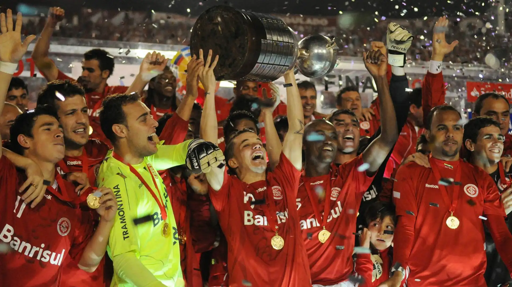
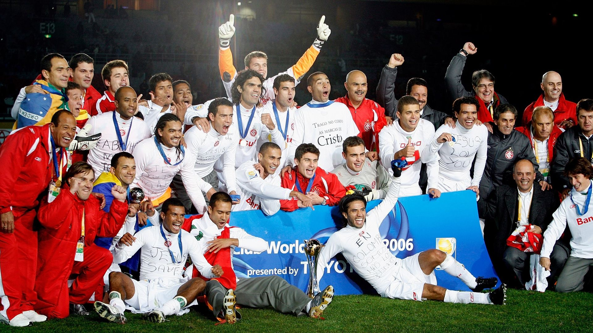
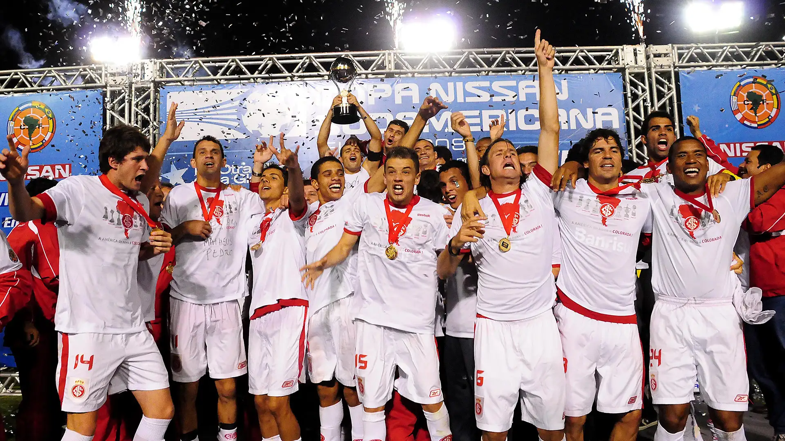
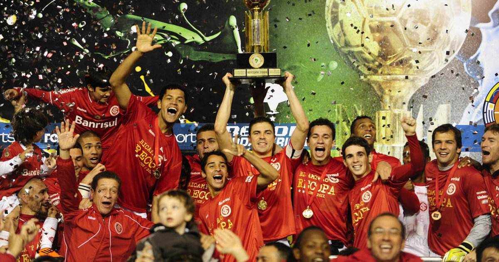
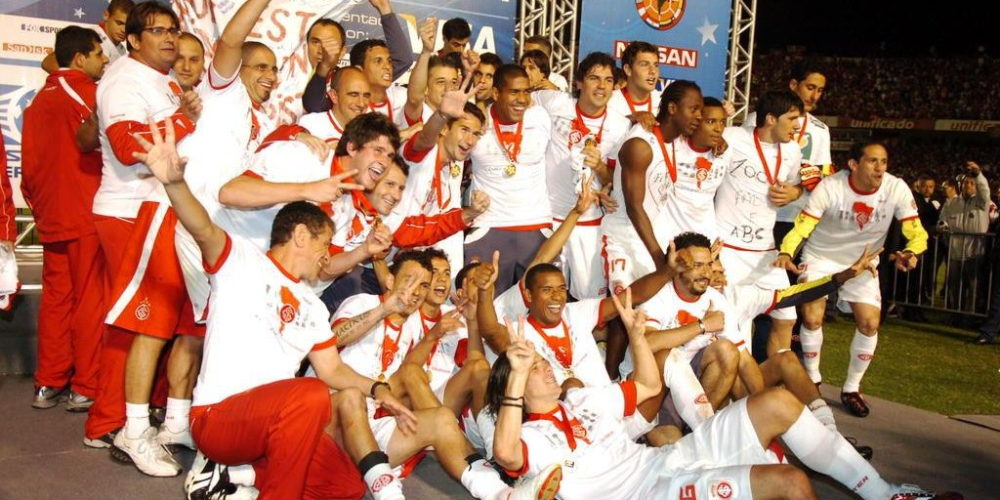
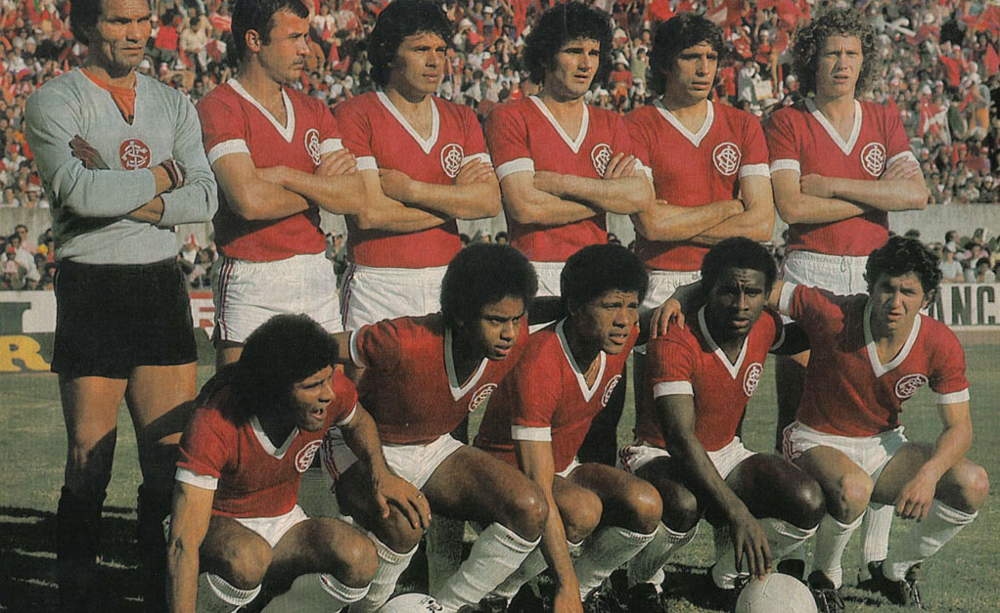
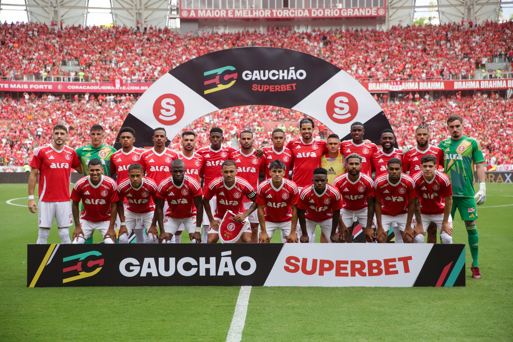

Copa Libertadores da América — 2 títulos
- 2006, 2010
Inter campeão da Libertadores 2006 e 2010, superando clubes como Nacional, LDU, Libertad, São Paulo e Chivas Guadalajara, conquistando o bicampeonato sul-americano.

Mundial de Clubes da FIFA — 1 título
- 2006
Em 2006, o Inter bateu o Al-Ahly na semi e o Barcelona por 1 a 0 na final, com gol histórico de Adriano Gabiru, conquistando o mundo.

Copa Sul-Americana — 1 título
- 2008
Em 2008, o Inter venceu Estudiantes e Goiás até garantir o título em final emocionante contra o próprio Estudiantes.

Recopa Sul-Americana — 2 títulos
- 2007, 2011
Títulos em 2007 e 2011 contra Pachuca e Independiente, confirmando a força do Colorado no continente.

Copa Suruga Bank — 1 título
- 2009
Em 2009, o Inter venceu o Oita Trinita no Japão, adicionando mais um troféu internacional à galeria.

Campeonato Brasileiro — 3 títulos
- 1975, 1976, 1979 (invicto)
O Inter foi campeão nacional três vezes, destacando-se o feito invicto de 1979, uma marca rara no futebol brasileiro.

Copa do Brasil — 1 título
- 1992
Em 1992, o Colorado superou adversários fortes e bateu o Fluminense na final, levantando sua única Copa do Brasil.

Campeonato Gaúcho — 46 títulos
- 1927, 1934... 2025
O Inter ergueu o Gauchão 46 vezes, incluindo o título invicto de 2025, reafirmando sua supremacia no Rio Grande do Sul.
Resumo de Conquistas
- Títulos Internacionais: 7
- Títulos Nacionais: 4
- Títulos Estaduais: 46
Total: 62 títulos oficiais